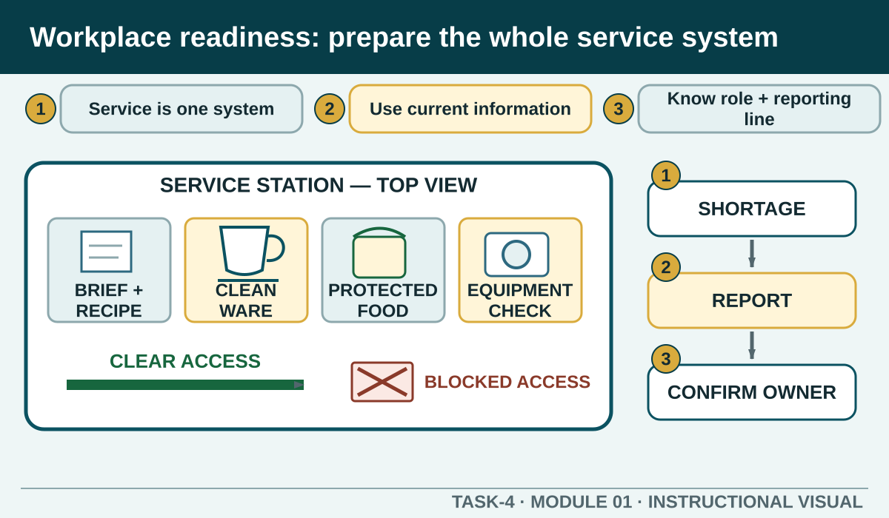

Prior learning
Recall the previous lesson and bring forward one question or completed learning artefact.
Task 4 · Lesson 1 of 8
Plan and prepare for a service period by confirming current information, understanding the role, checking the work area and communicating problems before they affect customers or the team.
Prior learning
Recall the previous lesson and bring forward one question or completed learning artefact.
Success criteria
Learning boundary
This lesson supports preparation and formative practice. The current authorised package and trainer/assessor control formal products, observations, dates and submission.
Hospitality performance is not a set of isolated product skills. A service period connects preparation, customer interaction, operational work and end-of-service duties. A clean cup, an accurate order and a well-made beverage still depend on the station being ready, the correct information reaching the right people and the final product being checked before handover.
Think in three linked phases. Prepare means understand the work, organise the area and identify problems early. Service means follow the order, apply the authorised method, communicate changes and protect quality. End of service means clean, store, report, hand over and prepare useful information for the next service. A missed action in one phase usually creates pressure in the next.
Before beginning, locate the information that controls the service: your allocated role, current menu or beverage list, product availability, expected customer needs, running sheet or work schedule, relevant recipe cards, equipment instructions and any verbal update from the supervisor. A document that looks familiar may be an old version, so check the current source rather than relying on memory.
Different sources answer different questions. The menu describes what may be offered. The recipe card controls the product method and presentation. Manufacturer instructions govern equipment use and care. Workplace procedures set local communication, hygiene, fault and escalation processes. When sources appear to conflict, pause and clarify which one is current.
Your role describes what you are responsible for doing, checking and communicating. The workgroup goal is broader: safe, timely and consistent service for customers. Effective workers complete their own tasks while noticing when information, shortages, delays or faults may affect someone else.
A role boundary is not an excuse to ignore a problem. It tells you what to do next. If you are authorised and trained to correct it safely, follow the procedure. If it belongs to another role, requires a decision outside your responsibility or could be unsafe, protect the immediate situation and report it through the agreed channel.
A station can look tidy and still be unready. Check safe access, cleanliness, food-contact surfaces, equipment condition, required serviceware, ingredients, storage, waste controls, cloth management and the information needed to complete orders. Use the workplace procedure and manufacturer instructions for any equipment preparation.
Mise en place means arranging the work so the next action can happen safely and efficiently. Put frequently used authorised items within sensible reach, keep food-contact and waste items separated, protect ingredients, and leave clear paths for co-workers. Do not energise, adjust, dismantle or chemically clean equipment unless the authorised method and your role allow it.
Speed in hospitality comes from a stable sequence, clear priorities and fewer avoidable interruptions. Prepare shared resources before demand increases, complete safety and hygiene checks before production, and group compatible preparation tasks only when the workplace method permits. Never save time by skipping an order check, using the wrong serviceware or bypassing a safety step.
Priorities can change during service. A safety issue, allergy communication, equipment fault or customer problem may need attention before a routine production task. When priorities change, communicate the reason, identify who owns the next action and update any affected order or teammate.
A brief-back is a short confirmation of what you understood. State your role, the immediate priority, any important product or customer information, the issue you have identified and the person responsible for the next action. This exposes misunderstandings before service begins.
Good preparation evidence is specific and observable. Instead of writing that the station was fine, record what was checked, what information was confirmed, what problem was found and what authorised response followed. Do not record private business details, real customer information or another student's observations.
Phone view: swipe across the diagram, or use Open larger below.

Formative practice
Each option explains the workplace consequence. These responses save on this device.
Written application
Name observable checks and the information source. Do not invent a repair, recipe, setting or local reporting title.
Apply and keep evidence
Transfer a task, constraint and confirmed next action without losing critical information.
Use the check result, activity record and written response as formative learning evidence only. Formal evidence remains controlled by the current package and trainer/assessor.
Authorised source note: Preparation, role clarity, operational information and integrated service are source-supported. Local checklists, reporting titles, service priorities and equipment preparation remain controlled by current teacher and workplace directions. Source references: TAS-2026-2027, TEACHER-T4-TOPICS, TGA-SITHIND007, TGA-BSBTWK201, SITE-T4-V2.